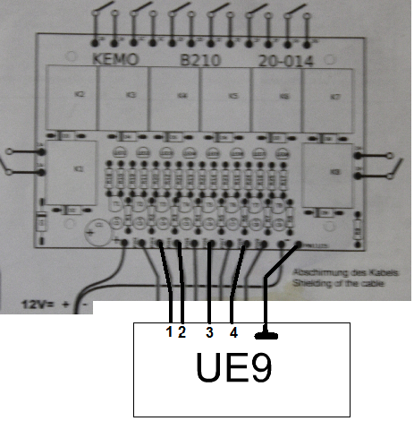
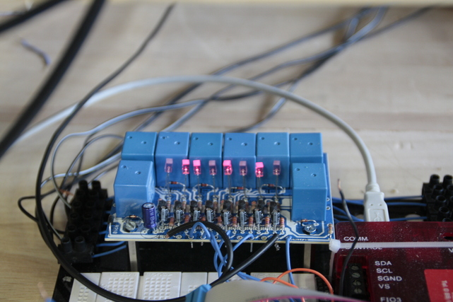

Wir wollten eine Möglichkeit schaffen den Strom der Strecken zu steuern, um in erster Linie Frühstarts ausschließen zu können. Des Weiteren wollten wir den Zustand der Fahrzeuge schützen, weil nach Beendigung eines Rennens kein weiteres Fahren mehr möglich sein sollte. Dies ermöglichte darüberhinaus weitere Rennmodi, wie etwa den Knock-Out Modus, bei dem der jeweils langsamste Fahrer einer Runde ausscheidet, indem die Stromzufuhr für seine Bahn unterbrochen wird.
Um dies zu ermöglichen, nutzen wir eine Platine, auf der Relais vorhanden sind, welche den Strom jeder Strecke freigeben, sperren und regulieren können.
